01 데이터 개요와 핵심 확인 사항
제공 데이터 기본 분석 보고서
학습 원본과 5월 평가 자료를 확인하고, 원본의 피처·시간축·관측 간격 및 집계 자료의 추세·계절성·잔차를 분석했습니다. 이 문서는 예측 성능 보고서와 별도의 탐색적 데이터 분석 자료입니다.
| 항목 | Full 원본 | May 정답 |
|---|---|---|
| 행 수 | 33,696,013 | 505 |
| 열 수 | 19 | 5 |
| 기간 | 2024-12-01 00:00 ~ 2025-04-30 00:00 | 2025-05-10 00:00 ~ 2025-05-31 00:00 |
| 관측 간격 | 모듈별 5초 | 1시간 |
| 계측 범위 | 13개 모듈 식별자 | 전체 시간별 정답 집계 |
| 센서 정보 | 전압·전류·전력·역률·누적량 | 센서와 모듈별 값 없음 |
그림 1. 두 제공 파일의 실제 시간 범위. Full의 마지막 시점과 완료된 시간 버킷의 끝을 구분합니다.
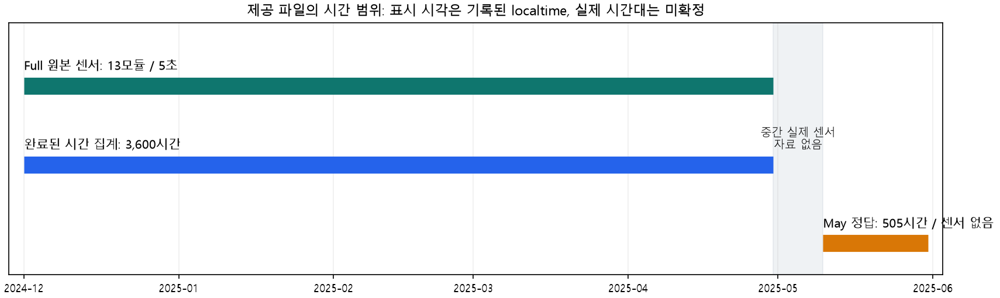
핵심: 결측값은 없고 기록된 localtime은 모듈별 5초 간격으로 연속입니다. 다만 Unix timestamp와의 시간대 불일치, 계측기 포함 관계, 일부 전력량 단위는 확인이 필요합니다. 기간을 집계할수록 변동이 감소하며, 월 데이터는 완전한 4개 관측치뿐입니다.
02 원본 데이터의 19개 피처
19개 열은 식별자 1개, 시간 필드 2개, 운전 상태 1개, 계측값 15개로 구성됩니다. 아래 dtype은 원본 앞부분의 CSV 파싱 추론이며 고정 스키마가 제공된 것은 아닙니다. 의미와 단위는 가이드 정의를 별도로 표시했습니다.
| 원본 피처명 | 의미 | 단위·주의 | 관측 dtype |
|---|---|---|---|
| module(equipment) | 모듈 ID와 괄호 안 계측점/설비 표기. 13개 태그를13대 독립 장비로 확정할 수 없음 | 식별자 | str |
| timestamp | 유닉스 타임스탬프 (밀리초); recorded localtime과 일관된 시간대 관계가 확인되지 않음 | Unix epoch ms (가이드) | int64 |
| localtime | 기록된 현지 시각 YYYYMMDDhhmmss. 가이드는 한국시간 문자열로 설명하지만 원본은 숫자표기 | 날짜·시각; 시간대 미확정 | int64 |
| operation | 설비 가동 여부 (1=가동); 관측값은 모든행1이며 상태전환이 없음 | 상태코드 | int64 |
| voltageR | R상 전압 (V) | V (가이드) | float64 |
| voltageS | S상 전압 (V) | V (가이드) | float64 |
| voltageT | T상 전압 (V) | V (가이드) | float64 |
| voltageRS | R-S 선간전압 (V) | V (가이드) | float64 |
| voltageST | S-T 선간전압 (V) | V (가이드) | float64 |
| voltageTR | T-R 선간전압 (V) | V (가이드) | float64 |
| currentR | R상 전류 (A) | A (가이드) | float64 |
| currentS | S상 전류 (A) | A (가이드) | float64 |
| currentT | T상 전류 (A) | A (가이드) | float64 |
| activePower | 유효 전력 (kW); 가이드는 각5초 구간의 평균값으로 설명 | kW (가이드; 미확정) | float64 |
| powerFactorR | R상 역률 (%) | % (가이드) | float64 |
| powerFactorS | S상 역률 (%) | % (가이드) | float64 |
| powerFactorT | T상 역률 (%) | % (가이드) | float64 |
| reactivePowerLagging | 무효 전력 (kVar) | kVar (가이드; 미확정) | float64 |
| accumActiveEnergy | 누적 유효 전력량 (일반 표 Wh, 주요 컬럼 표 kWh로 불일치) | Wh / kWh (가이드 불일치; 미확정) | int64 |
localtime은 20241201000000처럼 YYYYMMDDhhmmss를 숫자로 인코딩한 필드입니다. 문자열로 바꾼 후 format=%Y%m%d%H%M%S로 해석했습니다. 정수 값을 날짜 함수에 바로 넣으면 1970년의 나노초 시각으로 오해할 수 있습니다. operation은 전체에서 1로 고정되어 운전 전환을 설명하는 피처로는 정보가 없습니다.
03 계측 피처의 기초 통계
원본 전체 33,696,013행의 이전 전수 스캔 합계·제곱합·최솟값·최댓값을 사용해 통계를 재계산했습니다. 표준편차는 모집단 기준(ddof=0)입니다. 표본 센서 그림 및 상관계수의 표본 범위와 구분했습니다.
| 피처 | 평균 | 표준편차 | 최솟값 | 최댓값 |
|---|---|---|---|---|
| voltageR | 214.99 | 2.90 | 190.10 | 220.00 |
| voltageS | 214.99 | 2.90 | 190.14 | 220.00 |
| voltageT | 214.99 | 2.90 | 190.18 | 220.00 |
| voltageRS | 372.37 | 3.57 | 330.83 | 381.04 |
| voltageST | 372.37 | 3.57 | 329.95 | 381.04 |
| voltageTR | 372.37 | 3.57 | 330.56 | 381.04 |
| currentR | 17.50 | 7.22 | 5.00 | 30.00 |
| currentS | 17.50 | 7.22 | 5.00 | 30.00 |
| currentT | 17.50 | 7.22 | 5.00 | 30.00 |
| activePower | 3,009.95 | 717.15 | 864.44 | 5,220.93 |
| powerFactorR | 92.47 | 4.41 | 60.00 | 100.00 |
| powerFactorS | 92.47 | 4.41 | 60.00 | 100.00 |
| powerFactorT | 92.47 | 4.41 | 60.00 | 100.00 |
| reactivePowerLagging | 601.95 | 229.08 | 89.44 | 1,550.63 |
| accumActiveEnergy | 8,103,413.17 | 3,344,950.24 | 1,129,004.00 | 15,438,171.00 |
표의 단위는 피처 사전을 따릅니다. accumActiveEnergy는 누적 카운터로, 값의 크기와 장기 증가가 피처 분포를 지배합니다. 누적량의 원수치와 구간 소비량을 혼동하지 않아야 합니다. 전압·전류와 activePower 사이의 물리적 단위 일치 및 누적량의 Wh/kWh 표기는 별도 확인 대상입니다.
원본 모든 피처의 결측 수: 0. operation=1: 전체 33,696,013행. 결측이 없다는 사실만으로 센서 교정·단위·시간대·원래 삽입된 이상치가 모두 정상이라고 판정할 수는 없습니다.
04 계측 모듈의 범위와 관측량
단일 설비 1개만의 데이터가 아닙니다. 13개 모듈 이름에는 분전반·전등·기계·호이스트 등이 함께 포함돼 있습니다. 다만 계측기의 상하위 포함 관계가 없어 13개의 독립적인 최종 설비 또는 공장 총량으로 확정할 수 없습니다.
| 모듈 식별자 | 원본 행 수 | 완료된 시간 전력량 합계(kWh) | 13모듈 합계 내부 비중 |
|---|---|---|---|
| 1(PM-3) | 2,592,001 | 10,837,487 | 7.693% |
| 11(우측분전반1) | 2,592,001 | 10,835,682 | 7.692% |
| 12(4호기) | 2,592,001 | 10,836,116 | 7.693% |
| 13(3호기) | 2,592,001 | 10,831,259 | 7.689% |
| 14(2호기) | 2,592,001 | 10,834,920 | 7.692% |
| 15(예비건조기) | 2,592,001 | 10,837,473 | 7.693% |
| 16(호이스트) | 2,592,001 | 10,835,153 | 7.692% |
| 17(6호기) | 2,592,001 | 10,835,794 | 7.692% |
| 18(우측분전반2) | 2,592,001 | 10,836,167 | 7.693% |
| 2(L-1전등) | 2,592,001 | 10,835,691 | 7.692% |
| 3(분쇄기(2)) | 2,592,001 | 10,834,450 | 7.691% |
| 4(분쇄기(1)) | 2,592,001 | 10,838,627 | 7.694% |
| 5(좌측분전반) | 2,592,001 | 10,836,936 | 7.693% |
그림 2. 모듈별 완료된 시간의 관측 전력량. 비중은 데이터 내 13개 모듈 합계의 구성비이며 실제 공장 에너지 점유율로 확정하지 않습니다.
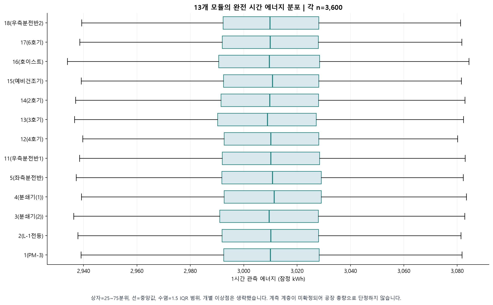
모듈별 시작·끝은 동일하고 각각 2,592,001행입니다. (150일×24시간×720개/시간)+종료 시점 1개에 해당합니다. 완료된 모듈별 시간은 3,600×13=46,800행이며, 13모듈을 합치면 3,600개 시간 시각이 됩니다. 원본 종료 시점 1개는 완료된 1시간 소비량으로 집계하지 않았습니다.
05 샘플링 간격과 시간축 품질
그림 3. 원본 첫 PM-3 하루 17,280개의 5초 관측과 처음 120초 확대. 한 모듈의 첫날 예시이며 전체 모집단의 분포를 대표하는 통계 표본은 아닙니다.
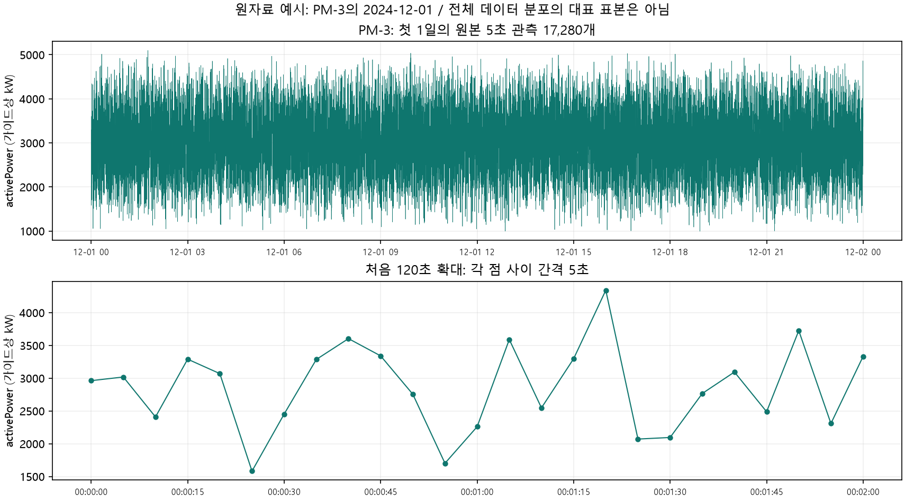
| 검사 | 결과 | 해석 |
|---|---|---|
| 모듈별 localtime 비5초 간격 | 0 | 기록된 현지 시각은 연속 |
| 모듈별 localtime 중복 | 0 | 모듈+localtime 키로 구분 |
| 모듈별 Unix timestamp 중복 | 9,360 | 13개 모듈×720행; localtime 중복과 다름 |
| Unix timestamp 역순 전환 | 13회 | 모듈별1회; localtime 역순은0회 |
| 시간대 오프셋 전환 | 2025-03-09 03:00 | localtime - Unix: -8시간 → -7시간 |
가이드는 한국시간이라고 설명하지만 Unix 시각과 localtime의 오프셋은 이 설명과 일치하지 않습니다. 첫 localtime은 2024-12-01 00:00이나 Unix 값을 변환하면 UTC 08:00, 한국시간 17:00입니다. 본 분석은 연속성이 검증된 기록 localtime을 기준으로 집계했으며 실제 시간대가 확인됐다는 뜻이 아닙니다. 서로 다른 모듈의 동일 시각은 정상 동시 관측이며 전체 행의 시각만으로 중복 제거하면 자료가 손상됩니다.
06 리샘플링 기준과 시간 단위 시각화
가이드 activePower(kW)는 해당 5초의 평균값입니다. 기록별 전력량=activePower×5/3600이며, 완료된 시간에서는 모듈별 720개 관측을 합칩니다. 최종 시계열은 13모듈을 합한 잠정 시간 전력량입니다. 원본을 보간하거나 이상치 후보를 삭제하지 않았습니다.
| 단위 | 기준 | 전체 버킷 | 완료 | 부분 |
|---|---|---|---|---|
| H | 1시간 | 3,600 | 3,600 | 0 |
| D | 00시~다음 00시 | 150 | 150 | 0 |
| W-SUN | 월요일~다음 월요일 | 23 | 21 | 2 |
| MS | 월초~다음 월초 | 5 | 4 | 1 |
그림 4. 시간별 전력량 3,600개와 완료된 시간의 평균 부하. 1시간 버킷에서는 kWh와 kWh/h의 숫자가 같지만 물리량은 구분됩니다.
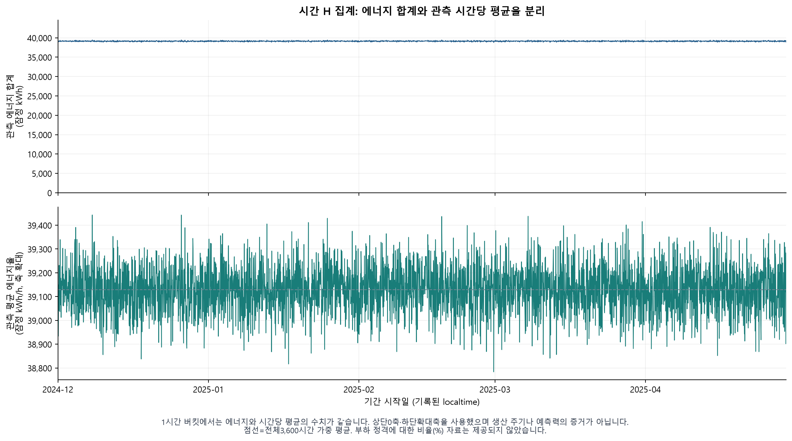
전체 시간 전력량 평균 39,129.378 kWh, 표본 표준편차 95.764 kWh. 각 버킷에 관측 시간과 기대 시간, coverage 및 완료 여부를 저장해 실제 관측 합계와 완전한 기간 총량을 구분했습니다.
07 일 단위 시각화
그림 5. 완료된 150일의 일 전력량 합계와 기간 평균 부하(일 전력량/24시간). 두 축은 각각 kWh/일과 kWh/h입니다.
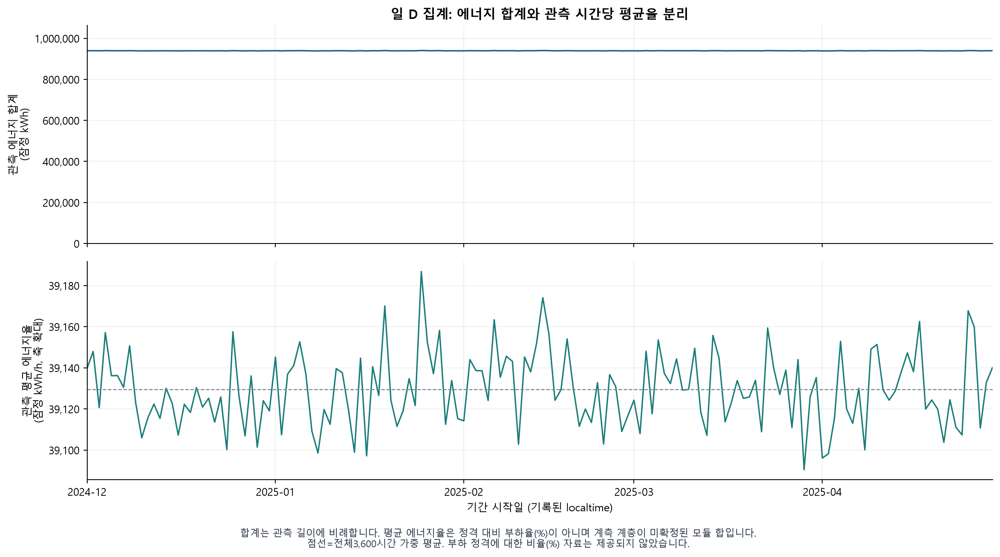
그림 6. 시간 시계열의 72시간 확대. 일정한 평균 수준 주위의 시간별 변동과 집계에 의한 평활화를 구분해 봅니다.
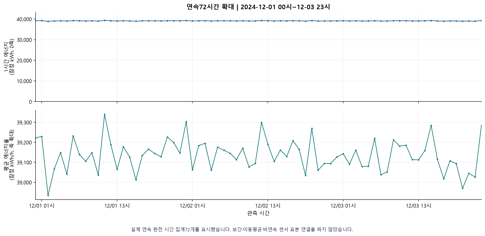
집계는 관측값의 변동을 평균화합니다. 일별 곡선이 매끈해지는 것만으로 일별 예측이 더 쉬워졌거나 새로운 설명 피처가 생겼다고 결론 내리지는 않습니다.
08 주간·월 단위 시각화
그림 7. 주간 23개 버킷 중 21개는 168시간 모두 관측됐습니다. 처음 주는 12월 1일의 24시간, 마지막 주는 4월 28~29일의 48시간만 있습니다.
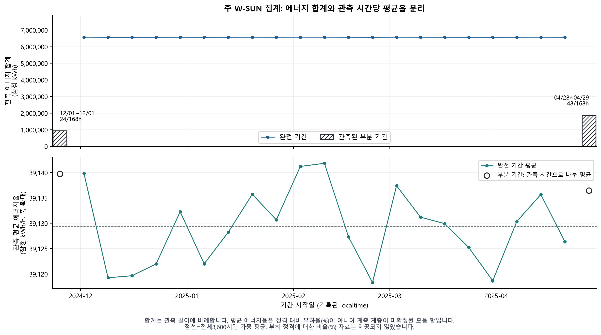
그림 8. 월 합계와 월 평균 부하. 12~3월은 완료된 4개월이며, 4월은 29일(696/720시간)만 집계됐습니다. 월 합계 변화에는 28일·30일·31일의 달 길이 차이가 포함됩니다.
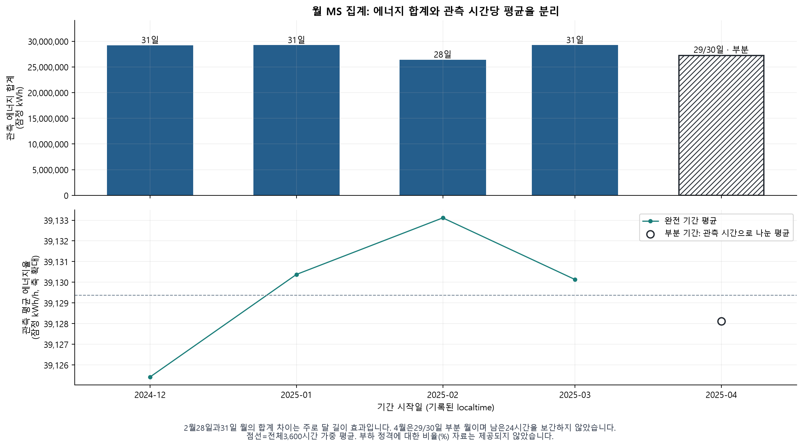
부분 기간의 합계를 완전한 주·월과 직접 비교하면 소비 감소처럼 보일 수 있습니다. 기간 평균 부하=관측 전력량/관측시간으로 길이를 보정하되, 미관측 시간의 실제값을 추정한 완전 기간 총량으로 해석하지 않습니다. 주 라벨 일요일은 이용 가능 시점인 다음 월요일 00시와 다릅니다.
09 시간대·요일·해상도별 패턴
그림 9. 시간대×요일 평균의 전체 평균 대비 편차와 셀별 관측 수. 작은 상대 편차를 확대해서 표시한 결과이며 큰 운전 주기가 확인됐다는 뜻은 아닙니다.
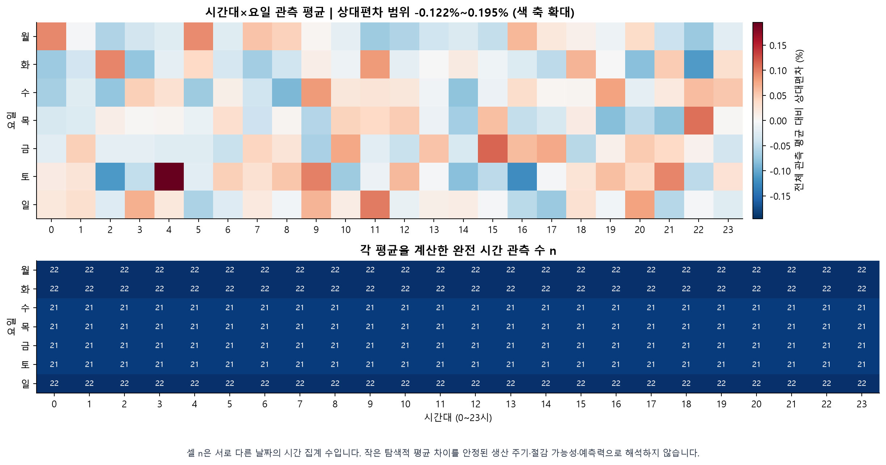
그림 10. 해상도별 기간 평균 부하의 변동계수. 서로 다른 기간 길이의 에너지 합계 표준편차를 섞어서 비교하지 않았습니다.
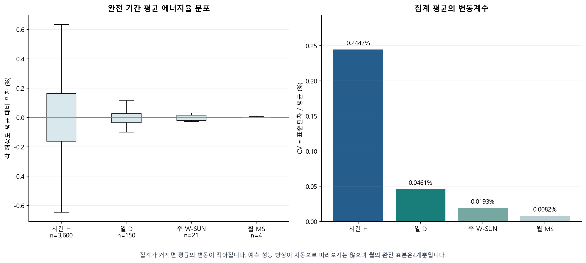
달력별 평균만으로 계절성을 확정하지 않고 아래의 원 시계열 ACF, 스펙트럼 및 순열 기반 진단을 함께 확인했습니다. 월 값 4개의 작은 변동은 충분한 계절 반복을 관측했다는 근거가 아닙니다.
10 센서 분포와 동시점 관계
그림 11. 모듈×완료된 시간별 층화 센서 표본 187,200행의 분포·동시점 상관 분석. 전수 통계 표와 다른 표본 결과이며 인과관계 또는 미래 예측력을 의미하지 않습니다.
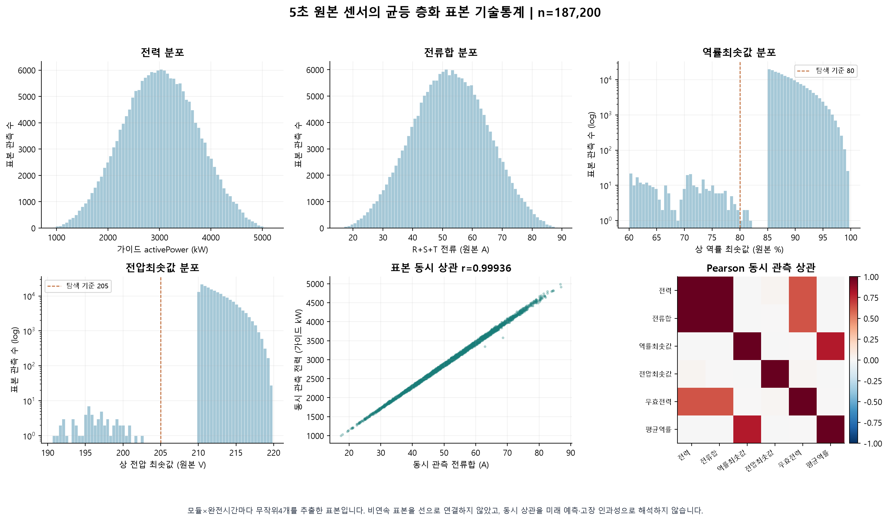
각 모듈의 완료된 시간마다 720개 5초 슬롯 중 4개를 균등·비복원으로 추출한 기존 표본을 사용했습니다. 13모듈×3,600시간×4=187,200행이며 고정 난수 시드를 사용하고 이상치 후보를 과표집하지 않았습니다. 동시점 상관이 커도 미래의 센서가 예측 시점에 제공되지 않으면 미래 목표 예측 피처로 그대로 사용할 수 없습니다.
11 시계열 분해 방법과 해석
가법적 분해: 관측값 = 추세 + 계절 성분 + 잔차. 추세는 완만한 수준 변화, 계절 성분은 지정한 주기로 반복하도록 추출한 성분, 잔차는 나머지입니다. 이 데이터에서는 robust STL과 두 주기를 동시에 분석하는 MSTL을 적용했습니다.
| 입력 | 분해 | 지정 주기 | 관측 수 |
|---|---|---|---|
| 시간 전력량 | robust STL | 24시간 | 3,600 |
| 시간 전력량 | robust STL | 168시간 | 3,600 |
| 일 평균 부하 | robust STL | 7일 | 150 |
| 시간 전력량 | robust MSTL | 24·168시간 | 3,600 |
| 주간 평균 부하 | 연간 계절 분해 제외 | 52주 필요 | 완료 21주 |
| 월 평균 부하 | 연간 계절 분해 제외 | 12개월 필요 | 완료 4개월 |
STL은 주기를 지정하면 계절 성분을 추출하므로 그래프에 계절선이 나타난 사실 자체는 실제 반복 주기의 증거가 아닙니다. 계절성 강도는 잔차와 계절+잔차 분산의 비율로 계산한 기술적 지표이며 예측 R² 또는 미래 정확도가 아닙니다.
이번 분해는 전체 과거 기간을 사용한 탐색적 설명입니다. 양쪽 관측을 이용하는 추세 필터에는 미래 값이 포함되므로 이 성분을 과거 시점의 예측 피처로 바로 사용할 수 없습니다. 실제 모델 적용에서는 각 학습 구간 안에서 다시 계산해야 합니다.
참고: statsmodels STL 공식 문서, MSTL 공식 문서. 전체 설정·진단 결과는 decomposition/results.json과 개별 성분 CSV에 저장했습니다.
12 시간 시계열: 24시간 주기 STL
그림 12. 관측값, 추세, 계절 성분과 잔차. 성분의 축 단위는 입력 단위와 동일하며 관측값과 성분별 세로축 범위는 다릅니다.
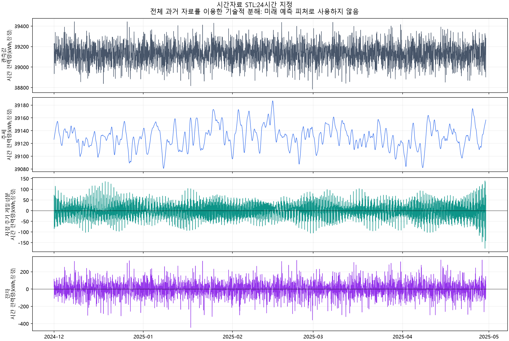
계절성 강도 0.1467, 추세 강도 0.0436. 입력 표준편차 95.7642, 잔차 표준편차 86.7913(시간 전력량(kWh,잠정)). 이 지표는 기술적 분해 결과이며 미래 예측 성능이 아닙니다. 동일 설정으로 시간 순서를 섞은 19개 참고 분해의 강도 90% 범위는 [0.1231, 0.1544]이며 실제 강도도 이 범위 안에 있습니다. 따라서 추출된 계절선 자체가 뚜렷한 반복성을 입증하지 않습니다.
성분 CSV에는 원 시계열, 추세, 계절 성분, 잔차를 저장했습니다. 합성 재구성 오차와 원 자료의 시간 정렬은 별도 검증했습니다. 전체기간 사후 분해 그림이며 미래 예측 결과를 표시한 그림이 아닙니다.
13 시간 시계열: 168시간 주기 STL
그림 13. 관측값, 추세, 계절 성분과 잔차. 성분의 축 단위는 입력 단위와 동일하며 관측값과 성분별 세로축 범위는 다릅니다.
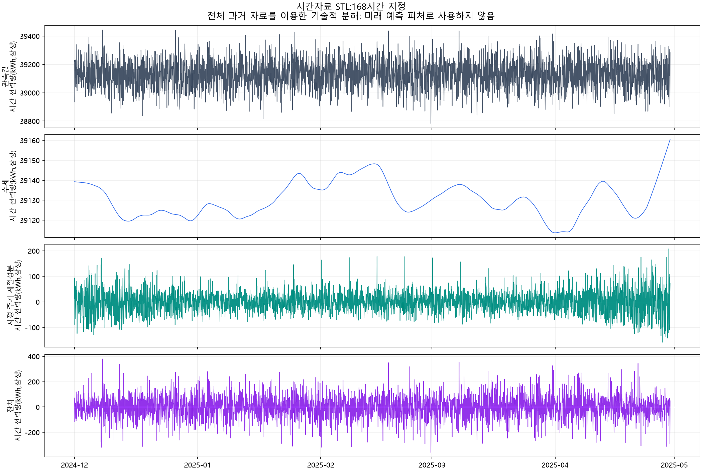
계절성 강도 0.1438, 추세 강도 0.0082. 입력 표준편차 95.7642, 잔차 표준편차 88.3240(시간 전력량(kWh,잠정)). 이 지표는 기술적 분해 결과이며 미래 예측 성능이 아닙니다. 동일 설정으로 시간 순서를 섞은 19개 참고 분해의 강도 90% 범위는 [0.1351, 0.1724]이며 실제 강도도 이 범위 안에 있습니다. 따라서 추출된 계절선 자체가 뚜렷한 반복성을 입증하지 않습니다.
성분 CSV에는 원 시계열, 추세, 계절 성분, 잔차를 저장했습니다. 합성 재구성 오차와 원 자료의 시간 정렬은 별도 검증했습니다. 전체기간 사후 분해 그림이며 미래 예측 결과를 표시한 그림이 아닙니다.
14 일 시계열: 7일 주기 STL
그림 14. 관측값, 추세, 계절 성분과 잔차. 성분의 축 단위는 입력 단위와 동일하며 관측값과 성분별 세로축 범위는 다릅니다.
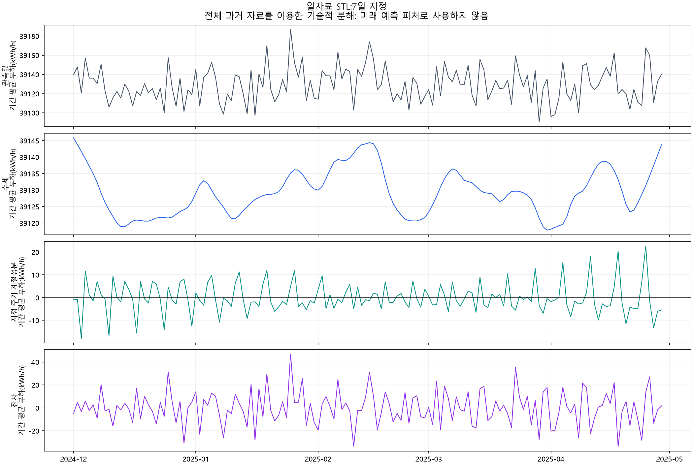
계절성 강도 0.1930, 추세 강도 0.2446. 입력 표준편차 18.0259, 잔차 표준편차 14.4901(기간 평균 부하(kWh/h)). 이 지표는 기술적 분해 결과이며 미래 예측 성능이 아닙니다. 동일 설정으로 시간 순서를 섞은 19개 참고 분해의 강도 90% 범위는 [0.0395, 0.1956]이며 실제 강도도 이 범위 안에 있습니다. 따라서 추출된 계절선 자체가 뚜렷한 반복성을 입증하지 않습니다.
성분 CSV에는 원 시계열, 추세, 계절 성분, 잔차를 저장했습니다. 합성 재구성 오차와 원 자료의 시간 정렬은 별도 검증했습니다. 전체기간 사후 분해 그림이며 미래 예측 결과를 표시한 그림이 아닙니다.
15 시간 시계열: 24·168시간 MSTL
그림 15. 관측값, 추세, 계절 성분과 잔차. 성분의 축 단위는 입력 단위와 동일하며 관측값과 성분별 세로축 범위는 다릅니다.
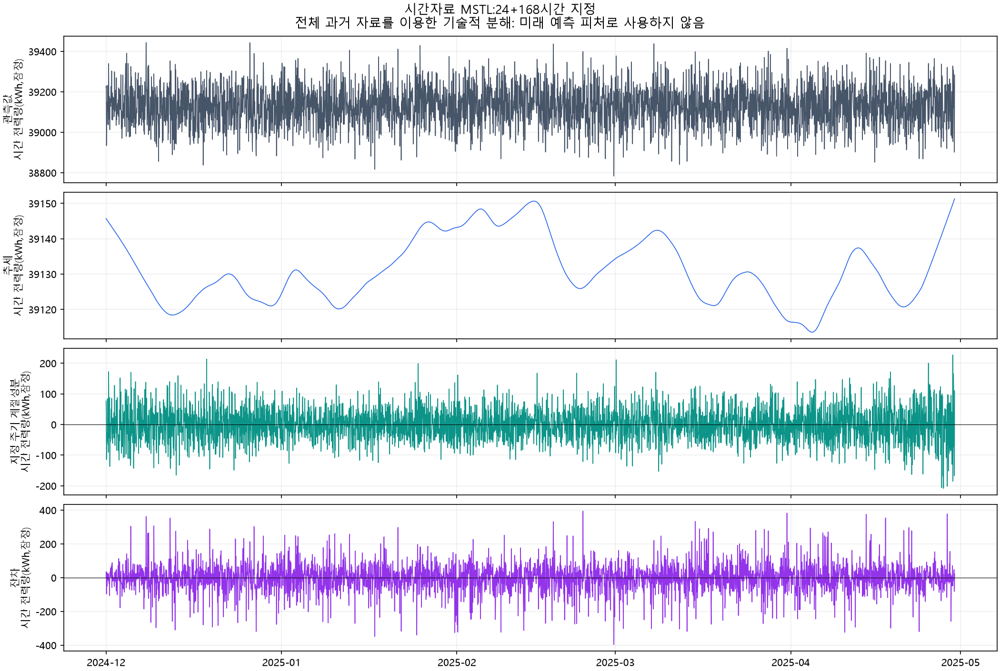
계절성 강도 0.2327, 추세 강도 0.0075. 입력 표준편차 95.7642, 잔차 표준편차 83.6742(시간 전력량(kWh,잠정)). 이 지표는 기술적 분해 결과이며 미래 예측 성능이 아닙니다. 두 계절 성분의 합으로 계산한 강도이며 단일주기 STL보다 커졌다는 사실을 예측 향상의 근거로 사용하지 않았습니다.
성분 CSV에는 원 시계열, 추세, 계절 성분, 잔차를 저장했습니다. 합성 재구성 오차와 원 자료의 시간 정렬은 별도 검증했습니다. 전체기간 사후 분해 그림이며 미래 예측 결과를 표시한 그림이 아닙니다.
16 주기성 진단과 분석 결론
그림 16. 원 시계열의 자기상관·스펙트럼과 지정 주기 반복성 진단. 분해에 앞서 실제 데이터에서 주기를 뒷받침하는지 확인했습니다.
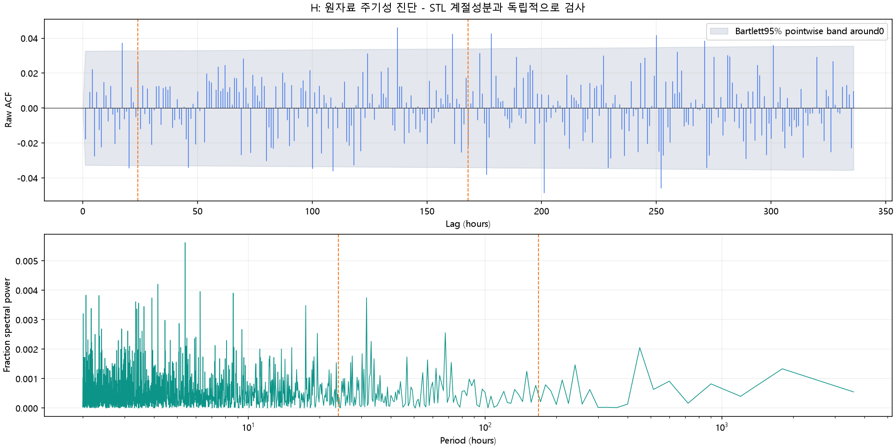
원 시계열의 ACF: 24시간 0.02610, 168시간 -0.02140, 일자료 7일 0.04192. 각 점별 95% 구간에는 0이 포함됐습니다. 위상 평균의 1,999회 순열 검정 p는 각각 0.9845, 0.5885, 0.7390(Holm 보정은 모두1)로 지정 주기 반복성을 뒷받침하지 못했습니다. 순열은 귀무가설에서 시간 순서의 교환 가능성을 가정하므로, 비기각을 독립성·무작위 생성·예측 불가능성의 증명으로 해석하지 않았습니다.
프로젝트에 주는 의미: 현재 자료는 13개 전력 계측 모듈을 높은 빈도로 관측한 이력입니다. 모듈별 센서 관계와 이상치 후보 분석에는 활용할 수 있으나, operation이 일정하고 평가 파일에 미래 센서가 없어 미래 변동을 설명하는 정보는 제한적입니다. 정격용량·생산량·운영 계획·계측기 계층과 시간대 확인이 추가 분석의 우선 자료입니다.
주간·월간 시계열에는 반복 계절을 확인할 기간이 부족합니다. 특히 완료된 월 4개로 월별 계절 예측이나 계절분해의 안정성을 검증했다는 주장은 하지 않았습니다. 이번 보고서는 사실 확인과 탐색 목적이며 고장 정답이나 데이터 생성 방식을 추정해 확정하지 않았습니다.
17 5월 정답 데이터와 자료 사용 범위
| 피처 | 내용 | 관측 사실 |
|---|---|---|
| id | 평가 시각 | 1시간 간격, 505개 |
| hourly_pow | 집계 전력량 정답 | 평균 39,071.384; 표본 std 92.967 |
| may_bill | 전기요금 | hourly_pow × 180 |
| may_carbon | 탄소량 | hourly_pow × 0.424 |
| agg_pow | 평가 범위 합계 | 505개 hourly_pow 합계가 모든 행에 반복 |
May의 5개 열은 독립적인 센서 피처 5개가 아닙니다. 시각과 목표 전력량, 그 전력량에서 파생된 요금·탄소·합계이며, 전압·전류·운전 상태·모듈별 시계열은 제공되지 않습니다. 정답 파생 열을 미래 예측의 입력으로 사용하면 목표 정보가 유입됩니다.
May 관측 구간은 5월 전체가 아닙니다. 5월 10~30일의 완료된 21일 및 5월 31일 00시 버킷 1개입니다. 완전한 주는 2개이고 완전한 월은 없습니다. agg_pow를 5월 전체 총량으로 설명하지 않습니다.
공개 원본에서 내려받은 파일과 제공 파일의 바이트 크기·SHA-256은 이전 검증에서 동일했습니다. 이번 작업은 원본을 수정하거나 이동하거나 복사하지 않았으며, 새 그래프·분해 성분·통계·보고서만 별도 폴더에 만들었습니다.
새 산출물: PDF 및 HTML 보고서, 피처 사전·전수 통계 CSV, H/D/W/MS 집계 CSV, 분해 성분 CSV, 모든 그래프의 PNG/SVG, 재현 소스와 검증·파일 색인.
18 데이터 근거와 재현 파일
원본 근거는 프로젝트가이드.pdf, traing-dataset/rtu_data_full.csv 및 may-dataset/rtu_ground_truth_may.csv입니다. 가이드의 단위 설명과 실제 시간·형식·값에서 확인한 사실을 구분했습니다.
| 근거 | 확인 내용 |
|---|---|
| evidence/evidence_summary.json | 원본 스키마·행수·기간·모듈·샘플링·품질 독립 확인 |
| evidence/feature_dictionary.csv | 19개 피처의 의미·dtype·단위·결측·범위 |
| evidence/pooled_sensor_statistics.csv | 원본 전수 통계 재계산 |
| visuals/results.json | 시간 해상도별 집계·관측률·차트·표본 범위 |
| decomposition/results.json | STL/MSTL 설정·성분·강도·주기성 진단 |
| report_facts.json | 보고서에 사용한 수치와 통계 근거 |
| verification.json | 수치·시간 정렬·재구성·문서·브라우저 검증 |
| artifact_inventory.json | 새 산출물의 지속 식별자·크기·SHA-256 |
재현 시 기본 자료 보존을 위해 원본·기존 산출물은 읽기 전용으로 다뤘습니다. full 전수 통계는 기존 검증된 33,696,013행 전체 스캔 결과를 재사용했고, 이번에 원본 첫 17,280행을 직접 읽어 날짜 파싱과 5초 간격 예시를 확인했습니다. 모듈×시간 층화 센서 표본은 전수 통계와 구분했고 실제 출처·추출 방식·시드를 시각화 결과 JSON에 기록했습니다.
시계열 분해 공식 방법 문서: https://www.statsmodels.org/stable/generated/statsmodels.tsa.seasonal.STL.html 및 https://www.statsmodels.org/stable/generated/statsmodels.tsa.seasonal.MSTL.html. 검정의 가정과 재구성 허용 오차는 분해 결과 JSON에 기록했습니다.
개별 자료 다운로드
그래프 PNG/SVG 20쌍과 분석 CSV 24개 묶음
시간 집계 CSV · 일 집계 CSV · 주간 집계 CSV · 월 집계 CSV
STL 24시간 성분 CSV · STL 168시간 성분 CSV · STL 7일 성분 CSV · MSTL 24/168시간 성분 CSV